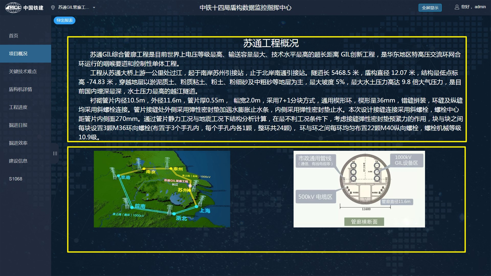
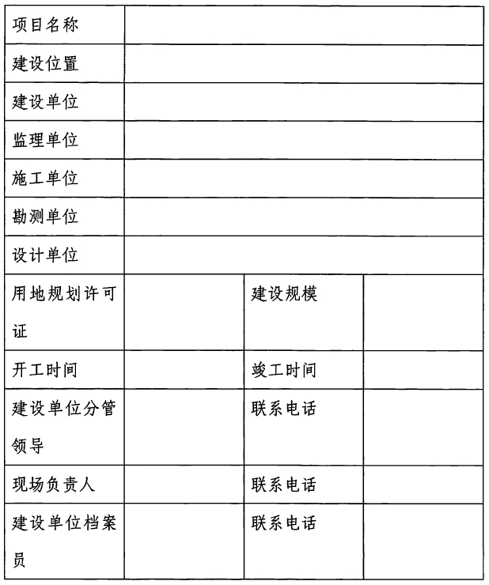
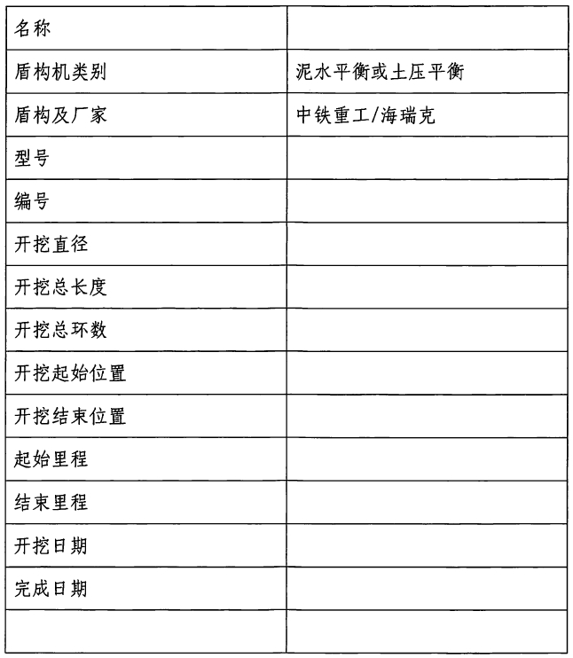
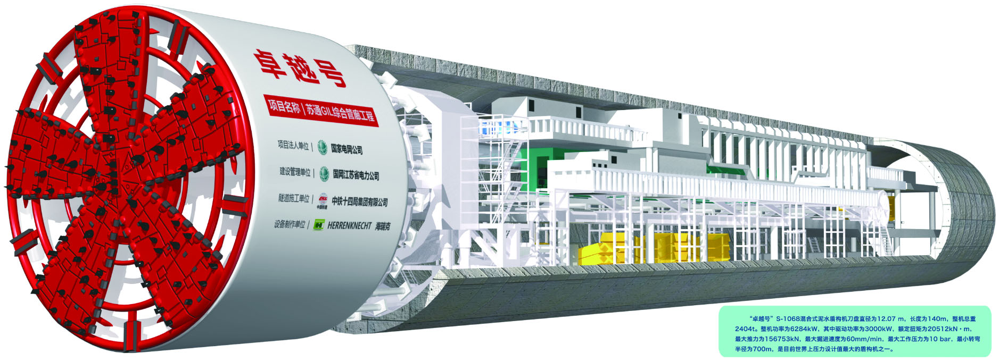
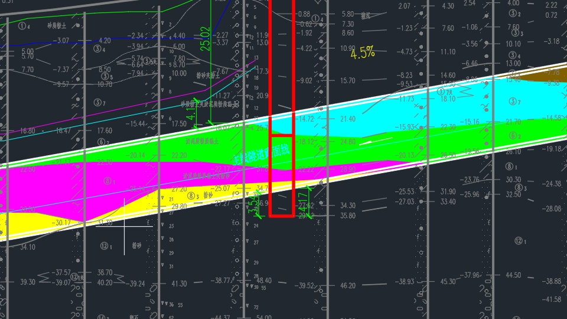
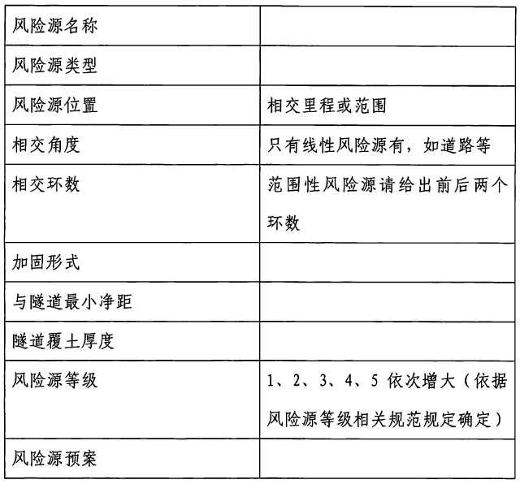
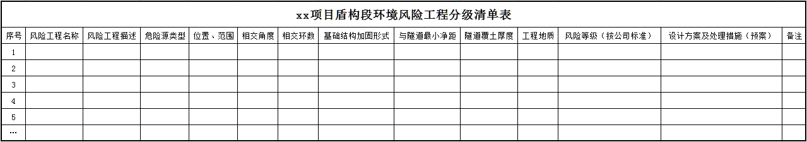
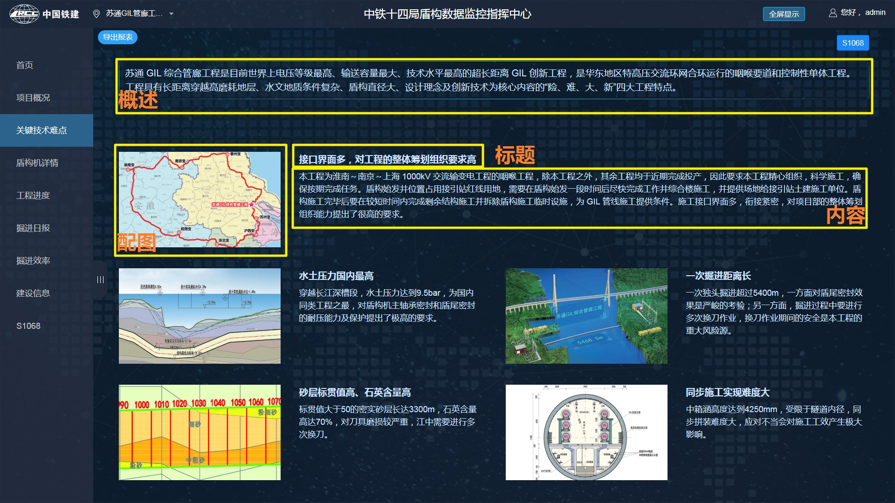
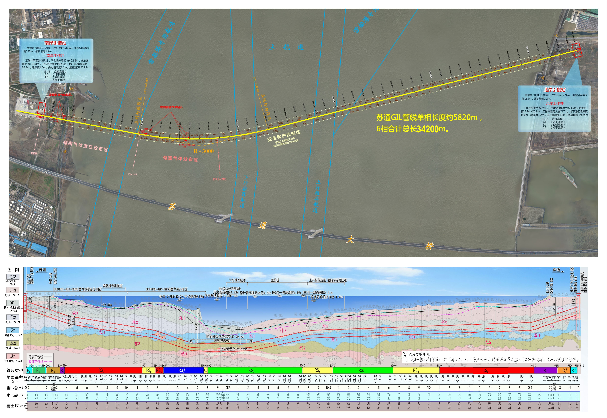
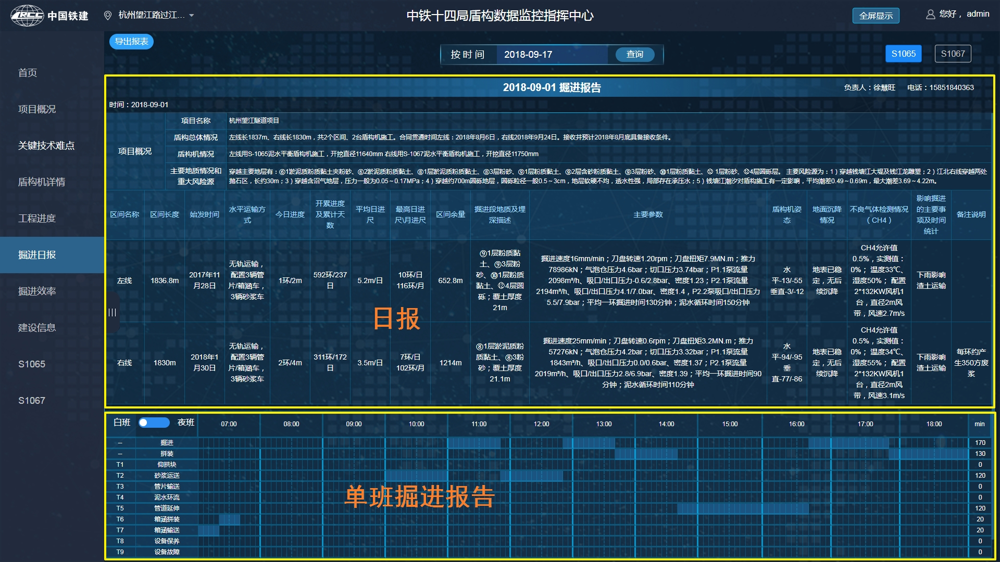

注：蓝底图片为录入系统后的效果图
以图文形式提供，最好是word格式。
另外整理一份用于网页上展示的，简要介绍工程整体情况，包括工程规模和线路走向、地质情况、管片结构情况三部分， 配上若干张相关的图片。
项目完整名称、项目简称(6个字以下）、合同额、项目详细位置（最好配图说明，可以在百度地图上标注出来）
以表格形式提供，表格如下：
1）项目施工所有盾构机信息，具体信息如下：
2）盾构机整体图片：
3）盾构机技术参数文档
项目平面图、剖面图，以CAD格式提供，附带CAD文件中用到的特殊字体和其他引用；
纵断面图：盾构机所穿越地层分区填色的CAD图
隧道部分填色，要求图上各个位置能明显看出地层名称和分界
包含所有监控界面
如推进压力超过50Bar算报警，则阈值就是50,需提供所有界面上需显示的关键信息报警阈值，以excel表格提供；
每台盾构及开挖中的风险源信息，主要是和进度有关的风险，具体信息如下：
以表格的方式提交，如图：
难点的整体情况和每一个点的具体情况，包括标题、内容和图片(概述部分不可省略，标题简短，内容简练，每个点附图一张，注意比例不要相差太大，不好找就放盾构机或项目图片)
依照苏通提供图片，上面为平面(卫星图），下面为断面，合并为一张，始发和接收垂直位置要基本对齐，宽度3000像素以上，图片文件单独提供,不要标注当前进度，系统会自动生成
几份近期的掘进日报，表格+横道图,均为表格格式
已知盾构机数据详细接入方式：
图1
图2
图3
备注：接入数据时，请各盾构项目部安排懂网络通信的员工和西南交大对接；有不清楚的，请致电西南交大工程师 杜枭(18683571676)。